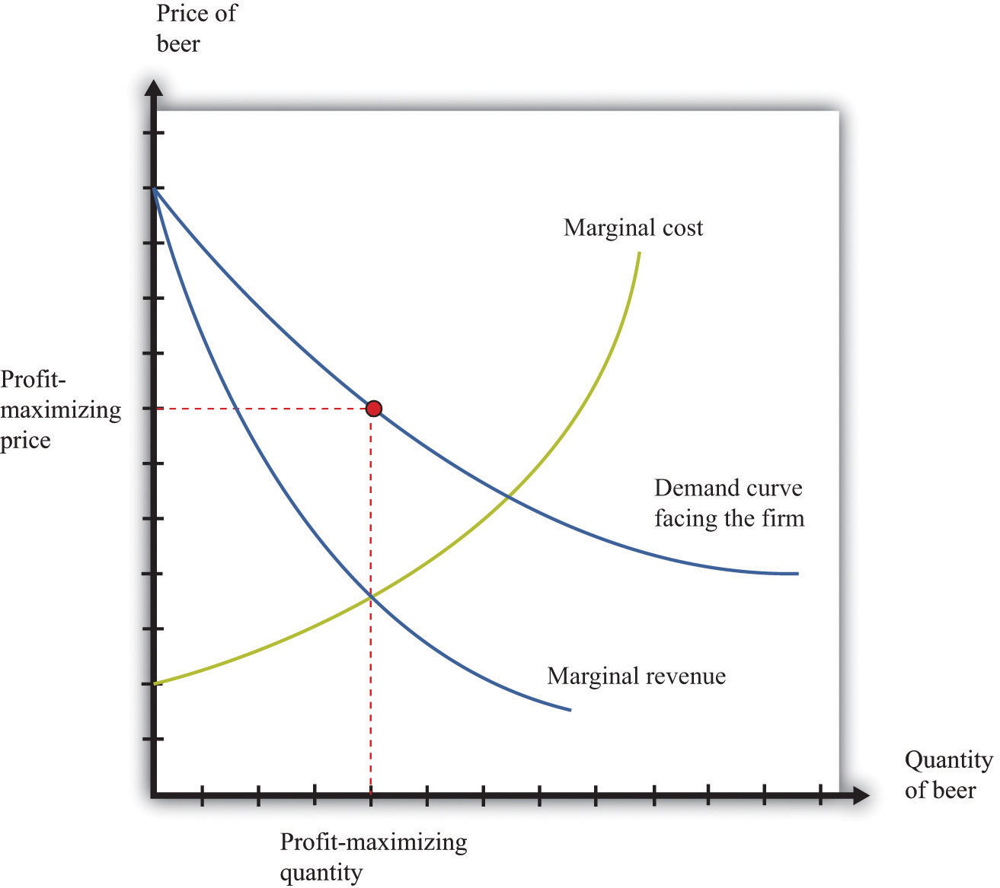
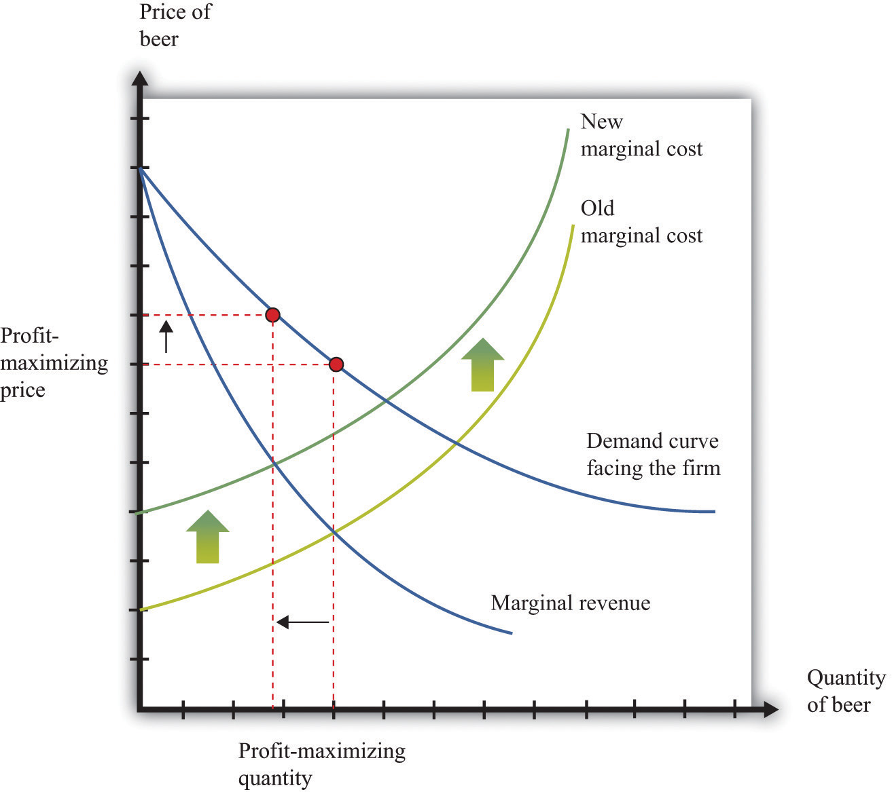
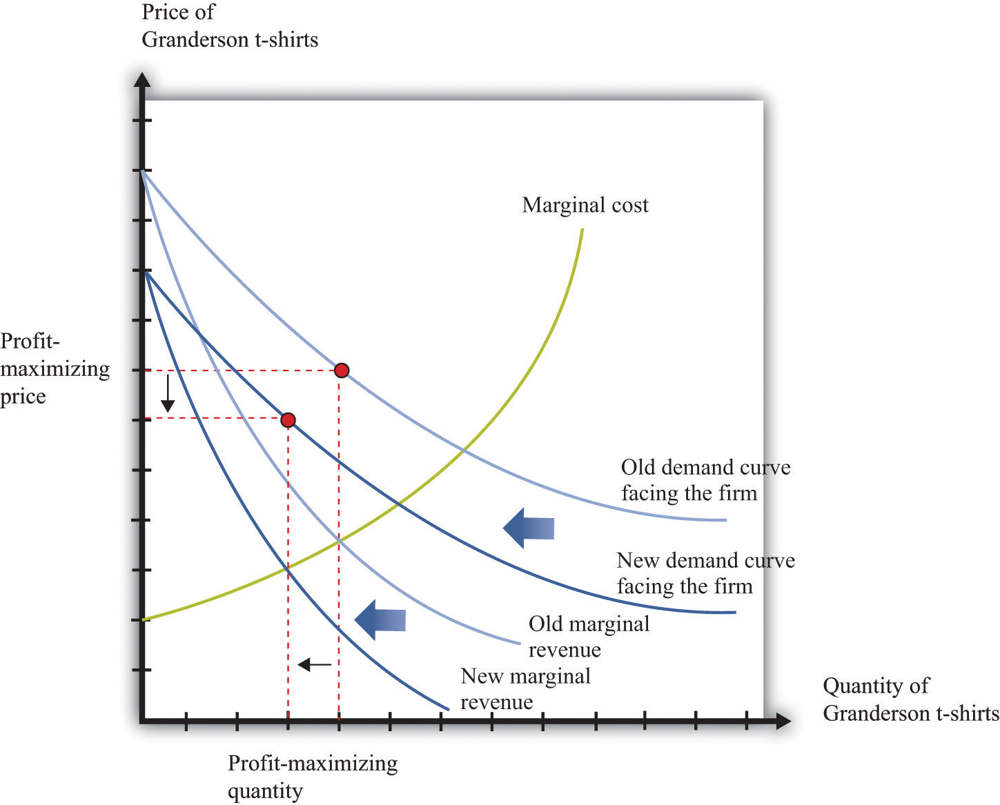

Everything that we have discussed in this chapter applies, strictly speaking, only to perfectly competitive markets. Yet the conditions for perfect competition are quite stringent. For a market to be perfectly competitive, there must be a large number of sellers of an identical product. There also must be a large number of buyers. Each buyer and seller must be “small” relative to the market, meaning that they cannot influence market price.
There are certainly some markets that fit these criteria. Markets for commodities, such as wheat or gold, are one example. Markets for certain financial assets are another. Such examples notwithstanding, the vast majority of markets are not perfectly competitive. In most markets, firms possess some market power, meaning that the demand curve they face is not perfectly elastic.
You might think this greatly weakens the usefulness of the supply-and-demand framework. A firm with market power chooses a point on the demand curve that it faces. It sets a price as a markup over marginal cost and then produces enough to meet demand at that price.We explain how firms set these prices in Chapter 7 "Where Do Prices Come From?". A firm with market power does not take the price as given and then determine a quantity to supply. In fact—strictly speaking—there is no such thing as a supply curve when a firm has market power.
Economists understand this very well. Yet suppose you ask an economist to predict the likely effect of a worsening conflict in the Middle East on oil prices. The mental model she will use is almost certainly to imagine a supply curve for oil shifting to the left. Based on this model, she will predict higher prices and lower consumption. If you were to ask another economist to predict the effects of an economic recession on purchases of automobiles, he would imagine a demand curve shifting to the left and thus predict lower prices and lower output.
The first economist would use a supply-and-demand framework even though oil producers have market power. The second economist would use a supply-and-demand framework even though not all cars are identical. Although economists understand that many markets do not satisfy the strict conditions of perfect competition, they also know that the intuition from comparative statics carries over to more general market structures.
To see why, let us go back to our beer example again. We all know that not all beer is the same, and the beer companies spend a lot of money to convince us of this fact. Different beers have different tastes, and there are customers who are loyal to different beer brands. Breweries possess market power, meaning that we cannot—strictly speaking—draw a supply curve for individual beer producers or for the market as a whole.
Yet our comparative statics story, which supposes that the beer market is competitive, gives us an answer that makes sense. When the price of hops increases, this increases the marginal cost of production for all beer producers. Because they set prices based on a markup over marginal cost, the price of beer will increase, and less will be consumed. Output will be lower for all producers, and prices will be higher. Our comparative statics technique gives the right answer. Let us go through this more formally, first for a change in production costs and then for a change in demand.
Figure 8.20 "Finding the Profit-Maximizing Price and Quantity When a Firm Has Market Power" shows how a firm with market power sets its price.This figure is explained more fully in Chapter 7 "Where Do Prices Come From?". To maximize its profits, a firm wants to produce the quantity where marginal revenue equals marginal cost. It sets the appropriate price as a markup over marginal cost.
Toolkit: Section 31.15 "Pricing with Market Power"
You can review the details of pricing with market power, including marginal revenue and markup, in the toolkit.
Figure 8.20 Finding the Profit-Maximizing Price and Quantity When a Firm Has Market Power
A firm with market power faces a downward-sloping demand curve and earns maximum profit at the point where marginal revenue equals marginal cost.
Now what happens if marginal cost increases? Think of a single beer producer and then imagine that the price of hops increases, so the marginal cost of producing an extra unit of output increases. This change in the marginal cost of production leads the brewer to decrease production (Figure 8.21 "An Increase in Marginal Cost"). Marginal cost decreases and marginal revenue increases until the two are again equal.
Figure 8.21 An Increase in Marginal Cost
In response to an increase in marginal cost, a firm now finds it optimal to set a higher price and produce a smaller quantity of beer.
Although Figure 8.21 "An Increase in Marginal Cost" is drawn for a single seller, it captures the common experience and response of all sellers. The increase in the price of hops causes the marginal cost to increase for all brewers, and they all respond by producing less and increasing the price of beer. And this is exactly what we predicted about prices and quantities when we considered an increase in marginal cost in a perfectly competitive market.
Now reconsider the T-shirt example. There may be only a small number of producers who are licensed to produce Detroit Tigers T-shirts. Although there are many different kinds of replica sporting shirts in the world—at least one for each major team in most of the sports you can imagine—these shirts are not all the same. So the market for replica T-shirts—and certainly the market for Granderson T-shirts—is not competitive. The producers of Granderson shirts for the Tigers choose quantities and set prices (see Figure 8.20 "Finding the Profit-Maximizing Price and Quantity When a Firm Has Market Power").
Figure 8.22 "Shifts in Demand and Marginal Revenue" shows the market as seen by one of these producers. Granderson’s move from the Tigers shifts the demand curve inward for the shirts that they produce. This shift in the demand curve also shifts the marginal revenue curve inward. In response, the firm adjusts its output so that marginal revenue again equals marginal cost, choosing its price to match the point on the demand curve at the new quantity produced. Output and price both fall. Again, this is the same prediction that we obtained from the comparative statics of a competitive market.
Figure 8.22 Shifts in Demand and Marginal Revenue
A decrease in demand causes marginal revenue to shift to the left. Marginal cost and marginal revenue intersect at a lower level of output. This lower level of output means marginal cost is lower, so the firm will also decrease its price.
Even when markets are not perfectly competitive, the supply-and-demand framework is usually a good device for predicting what will happen to prices and quantities in a market following a shock. Even if firms have market power, an increase in marginal cost will typically lead to an increase in the price and a decrease in the quantity supplied, just as supply and demand predict. Similarly, an increase in demand will typically lead to an increase in the price and an increase in the quantity supplied, again as predicted by basic supply-and-demand reasoning.
Although the supply-and-demand framework can be used for most situations where markets are not perfectly competitive, we still need to know when it might mislead us.
We also need to recognize that while we may be able to use supply-and-demand intuition for qualitative predictions, it is more difficult to make quantitative predictions when markets are not competitive. We cannot determine supply and demand elasticities as easily when firms have market power. The reason is that one firm’s decisions depend on what other firms are doing. Consider, for example, an increase in marginal cost in the beer industry. We have said that each firm in the market will respond by increasing its price and decreasing its quantity (Figure 8.21 "An Increase in Marginal Cost"). For example, Miller in the United States will set higher prices in response to an increase in the price of hops. But when markets are not perfectly competitive, the story does not stop there. Firms also look at the prices set by their competitors. Miller’s decisions on pricing depend also on the price chosen by Budweiser. If Budweiser sets a higher price as well, then Miller may want to increase its price still further, and so on.How exactly this plays out is a complicated problem, requiring some of the ideas that we introduce in Chapter 15 "Busting Up Monopolies" and Chapter 17 "Cars".
To sum up, the supply-and-demand framework can occasionally mislead when markets are not perfectly competitive. Yet most economists still begin with supply and demand when trying to explain a change in prices or quantities. Then they consider if there are reasons to expect either changes in the elasticity of demand or decreasing marginal cost. If neither of these seems likely, then the simple intuition of supply and demand will almost certainly give the right answer.